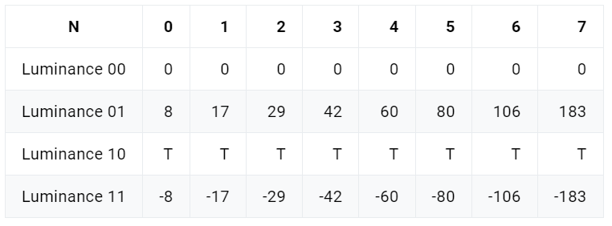
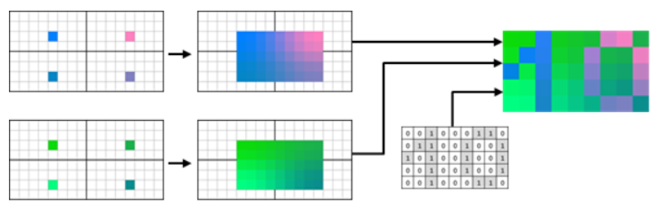

纹理压缩原理
1. 前言
纹理是2D图像，可以在不增加几何复杂度的情况下通过映射在3D表面来提升表现质量。纹理中的每一个像素又称为 纹素，这是纹理的基本单位。在游戏项目中，绝大部分内存都是被纹理所占用，因此对内存大小和带宽有很高的需求。
2. 为什么要压缩纹理
随机访问：由于纹理访问的模式高度随机（只有在渲染时被用到的部分才需要访问到，且无法提前预知其顺序），且场景中相邻的像素在纹理中不一定是相邻的，如下图，而标准的压缩算法 ( RLE, LZW, Deflate) 以及常用的图片压缩格式 ( JPEG, PNG TIFF) 都是对图片 整体压缩，因此无法在不解压整张图的情况下直接访问某个纹素，无法发挥GPU的并发优势。
带宽：带宽是发热的元凶，材质通常都是以压缩状态存储在内存中并传输至 GPU。解压过程只发生在 GPU 上，在渲染3D场景时，会有大量的贴图被传输到GPU，合理的压缩纹理可以降低带宽。
3. 压缩特性
随机访问：支持GPU随机访问任意元素，因此几乎所有的压缩器都拥有固定的压缩比，这也就意味着有损压缩。
高解压速度：通常编码速度慢没关系，因为通常纹理压缩只需要在游戏打包时进行一次，不影响游戏运行时的体验。但解码速度必须足够快，这样才能最大程度降低对渲染性能的影响。
高压缩比：决定带宽占用的主要因素，压缩比通常用比特率或每像素平均比特数 (bpp - byte per pixel) 来表示，常见的为2~8bpp。一般RGB原生纹理的像素指24位，4bpp表示每像素占4位，所以也可以认为4bpp表示压缩比为6:1。
block：图片会被分割成小块，通常为 4x4 纹素，太大对 cache 命中不友好。为了减少延迟，压缩块的大小最好小于内存总线的宽度（现代图形处理器的内存总线通常从 64 位到 512 位）。
质量：解压后的纹理拥有可以接受的视觉效果。
4. 纹理格式
4.1 无压缩格式
不压缩的纹理格式，可以被GPU直接采样，缺点就是内存占太多，占用带宽：
4.2 常用纹理压缩格式
4.2.1 DXT
所有 S3TC 系列格式都使用 4x4 的块。
原名S3TC (S3 Texture Compression) 最早由S3公司研发并取得专利，由于版权专利一般用于Window平台。微软将 S3TC 引入其 3D 图形API DirectX 6.0，名称为 DXT1，不支持透明通道。带有 Alpha 通道的纹理的修改即为 DXT2-DXT5。
从 DirectX 10 开始，这些格式又被称为 BC1-BC3 (块压缩) 。同时添加了两种新的格式： BC4 和 BC5，随着 DirectX 11 的发布 ，又引入了两种新的格式：BC6H， 第一种是针对高动态范围 (HDR - high dynamic range) 纹理的标准格式；而 BC7，则用于处理非常高质量的压缩。
1. BC1块(S3TC/DXT1)
- 将纹理划分为 4x4 的block，存储 64 位数据
- 在16个纹素中，选取两个作为基色，表示为 $c0, c1$，以 RGB565 格式存储，即红色占5bit， 绿色占6bit，蓝色占5bit
- 16个2位选择器值，一个像素最终的颜色值由 $c0, c1$ 和对应的2位选择器值决定
能够达到 4bpp 的压缩比：两个基色 (162bit=32bit)，16个选择器 (162bit=32bit)，将原始数据 (4x4x32=512bit)压缩为 64bit，压缩比4bpp。
块示例：
最终的颜色值混合公式（选择器的值不同，混合结果也不同），每个像素可以根据选择器值合并color0和color1值来解码：
2. BC2块(DXT2/DXT3)
BC1格式可以处理24位的RGB纹理，但不适用32位的RGBA888，Alpha 通道可以用于存储透明度、高光或其他材质属性。因此BC2在BC1的基础上支持了透明度，块数据：

将4x4共16个像素存储为128位数据
- 其中64位alpha通道，每纹素4位
- 另外64位和BC1一致
实际上，BC2 相当于压缩了RGB通道的格式为RGBA8884的纹理。它的透明度只有4位共16种数值，相比DXT5有些辣鸡基本没人用。DXT2和DXT3的差别在于是否是预乘过颜色。
3. BC3块(DXT4/DXT5)
BC3 的块 (与 BC2 类似) 由两段64位数据组成：一段是 Alpha 数据，另一段是颜色数据。颜色部分同样使用了 BC1 的格式，但 Alpha 部分则以压缩形式存储，见下图。所以数值范围更广，是比较常见的格式。Alpha 通道的压缩与 DXT1 类似：有两个 8 位精度的端点，3 位的索引表，因此能在局部调色板上 8 选 1。
4. BC4块(ATI1/3Dc+)/BC5块(ATI2/3Dc)
BC4和BC5在D3D10中可用，只能存储一个/两个颜色通道。
5. BC6H块和BC7块
BC6H和BC7在D3D11中可用，BC6H 格式旨在压缩高动态范围的纹理，仅支持不带alpha的GRB图像。它将 4x4 共16个纹素存储为128位数据，其中包括两个48位的RGB值（16:16:16），每个颜色分量都是带符号浮点值（1 个符号位 + 5 个指数位 + 10 个尾数位），以及16个2位索引表。
BC7相比其它有点特殊，虽然它也是将 4x4 共16个纹素存储为128位数据，但它的最低有效位为mode位，（最低有效位即最低的非0位）根据不同模式，颜色值的存储格式不同，是否有a值或a值的存储格式也不尽相同，是一种比较灵活的存储格式，但这也意味着解码所带来更多的消耗。
4.2.2 ETC系列
最初为移动平台设计，现在是Android平台的标准压缩方案。核心思想：基于人眼对于亮度的敏感要高于颜色的原理，编码时将色度和亮度分开存储，解码时将亮度偏移叠加到基颜色上还原，如下图：
1. ETC1
- 将纹理拆成 4x4 的block
- 再分为横向或纵向的 2x4 或 4x2 的两个子块，用一个 “flip” 位指定子块的垂直或水平排列
为两个子块指定一个基色，分两种模式，差分模式(Differential)和独立模式(Individual)，用1bit标识模式：
- Individual：diff=0，两块颜色差异很大时用。 用RGB444存储2个子块的基色
- Differential：diff=1，两块颜色接近时时用，sub-block1 的基色为 $c1$，与sub-block2的基色差值为 $c2$，所以sub-block2的 $base color=c1+c2$，$c1$ 用RGB555表示，$c2$ 用RGB333表示，共占用24bits，精度比individual模式更高。
每个子块包含一个3位的修饰表索引，对应于8种修饰值，用来亮度偏移
ETC1的块布局：
3bit 的修饰表索引对应于8种修饰值：
一个子块由1个基本颜色值和4个修饰值可以确定出4种新的颜色值：
base_color + RGB(modifier0, modifier0, modifier0) base_color + RGB(modifier1, modifier1, modifier1) base_color + RGB(modifier2, modifier2, modifier2) base_color + RGB(modifier3, modifier3, modifier3)
最终颜色根据另外32位数据中包含的 16个2bit 选择器数据从4个颜色数据中选出一个。
块解码示例：
缺点： ETC1不支持透明通道，透明通道需要单独存储；子块只有1个Base color，如果颜色分布不均匀，色度范围广，会丢失很多颜色，所以对有渐变的纹理支持很差。
2. ETC2
兼容ETC1，且改进了ETC1算法的缺点，并支持透明通道。ETC2的改变主要是针对 Differential 模式，当基色和偏移的总和溢出了 5bit 的有效范围 [0, 31] 时，是无意义。 超过范围时，使用其它编码模式，以提高精度。 ETC2常用压缩方式有三种：
- 将16 x RGB24bits的block，压缩为64bit
- 将16 x (RGBA24bit +1bisAlpha) block，压缩为64bit
- 将16 x RGBA32bit block，压缩为128bit
模式：
Individual模式： D=0，算法与ETC1的Individual模式一样
- Differential模式： D=1，算法与ETC1的Differential模式一样
T模式： 2个块颜色相近，D=1，R通道溢出，同时忽略G，B通道是否会溢出，此时使用T模式压缩纹理。T模式的颜色分布如下图所示，大部分颜色沿着直线分布，但部分像素颜色差别较大，总体呈T形分布。首先，计算得到2个Base Color A和B（用RGB444表示），然后沿着大部分颜色的分布直线，通过加减距离d，来修改A的亮度，得到颜色 C0=A-(d, d, d) 和 C1=A+(d ,d ,d)。其中R通道并未连续分布，用的是原来R5和R3中的低两位。得到4个Base Color A，B，C0，C1，而sub-block中的纹素就是着4种颜色中的一种，所以需要2位编码。
H模式： R通道没有溢出，且G通道溢出，不论B通道是否溢出，此时选择H模式。H模式也有4个Base Color，颜色分布如下图，这些颜色在 RGB 空间中形成 H 形，适用于那些，颜色位于两条线上的块。同样先计算2个Base Color A和B，然后通过加减d，偏移亮度，得到4个新的Base Color C0，C1,C2,C3, 通过如同T模式一样，用0-31位构建16个像素得2bits索引，选择4个基础颜色之一。
Planar模式： 当R和G通道均没有溢出，且B通道溢出，选择Planar模式。该模式使用3个基色 C0、Cv、Ch如下图，且三种颜色都以RGB676格式存储，所有纹素的颜色使用线性滤波方程 $C(x, y)=x(C_H – C_0)/4 + y(C_v-V_0)/4 + C_0$ 便可以得到。
ETC2的RGBA8881 丢弃独立模式，因此仅仅通过是否溢出来区分 T、H 和 Planar 模式。Diff-bit 用于指定差分子模式。D=1时是差分模式，像之前一样解压，D=0时，亮度偏移表索引 10 是透明度，如下图。将RGBA8881，同样压缩为4bit/像素，T、H 和Planar 块的解码过程保持不变。
- 
4.2.3 EAC
核心原理与ETC相同，但它只用于单通道或双通道数据，OpenGL ES 3.0和OpenGL 4.3后的设备大部分支持，但由于安卓平台的兼容性，一般不建议用单双通道贴图。
4.2.4 PVRTC系列
是由 Imagination Technologies 持有专利，专为 PowerVR 图形核心系列设计的。 用于 Apple 移动设备，例如 iPhone、iPad和部分PowerVR的安卓机支持。可能是这几种压缩格式中最封闭的技术。
与 DXT 和 ETC 不同，PVRTC 并非基于块的编解码器。核心思想与小波压缩有一些共通之处，即整张图像被分成低频和高频信号。低频信号由两张低分辨率图像 A 和 B 呈现，在两个维度上都按比例缩小了 4 倍，高频信号是完整分辨率低精度的调制信号 M。要解码整张图像，首先应放大图像 A 和 B，然后使与调制信号 M 混合，其中调制信号 M 指定了每个纹素的混合权重，如下图：
PVRTC算法平滑度更好，没有块伪影，但是可能会丢失那些高频细节。PVRTC 和 PVRTC2 两个版本都有 4bpp 和 2bpp 模式。为了不混淆，可用别名区分：PVRTC 4bpp、PVRTC 2bpp、PVRTC2 4bpp、PVRTC2 2bpp。
1. PVRTC 4bpp
将纹理分成4x4的block，每个块由图像 A 的一个像素、图像 B 的一个像素和相应的 4x4 调制系数区域组成，如下图：
A 和 B 颜色都能以 RGB 或 RGBA 格式存储，两个颜色字段中的最高位决定使用哪种格式。其中 A 颜色只有 15bit，因此 A 颜色用 RGB554 或 ARGB3443 编码，B 颜色可用 RGB555 或 ARGB3444 编码。调制区块对应每个纹素对应的调制权重，每个权重2bits。Mode位用于设置Alpha通道,以及2bpp设置。
解码示例图：
解码的时候通过使用使用双线性滤波方法图像 A 和 B，然后通过 4 个相邻 PVRTC 块解码 5x5 区域颜色。AB 纹理的混合权重就是 M 纹理，每个纹素对应一个 2bit 权重，如下图。在使用 1bit alpha 的情况下 “10” 留给透明度作权重。
2. PVRTC 2bpp
与 4bpp 算法相似，使用相同的块布局，如下图。不同之处在于，图像 A 和 B 在水平维度上又缩小了一半，且 32 位调制字段必须保存 8x4 纹素的调制信息。Mode位指定了调制信息的模式，M=0，每纹素对应1bit调制权重，M=1，每2个纹素对应2bits调制信息，并且像国际象棋格子一样错分配。
PVRTC 2bpp 解码的方式和 4bpp 一致：
- 
3. PVRTC2 4bpp
PVRTC2 增强了压缩质量，并消除了 PVRTC 的一些不足之处。例如，PVRTC2 支持 NPOT 纹理 (Non Power Of Two) ，两个维度的分辨率都可以不为 2 的幂。在 PVRTC 中，基色 A 和 B 各自可以独立选择使用 RGB 或 ARGB 存储格式，因此，在 PVRTC2 中仅使用一个位 (Opacity) 来指定两种颜色的格式，第二个位 (Hard) 用于编码新模式然而通常是两种颜色具有相同格式。PVRTC2 块的布局如下：
“Hard”位和“Mode”位一起能够表示四种解码模式：
解码方式：
- 标准双线性与PVRTC相同，punch-alpha略有不同
- 新的“Non-interpolated”(无插值)模式，将 “Hard “位设置为 “1”，简化了纹理图集的创建。在这个模式下 A，B 纹理被放大，但不插值，块内像素具有相同颜色，当处理颜色不连续纹理时效果较好。随后的解码过程与PVRTC中的解码过程相同。
“Local-palette”（局部调色板）模式下，A，B不混合，局部调色板由来自四个相邻的 PVRTC2 块的 A 、B 对填充，共8种颜色，但一个索引的大小只有2 比特，这意味着这 8 种颜色中只有 4 种可用于每个特定的纹素。 选择4种颜色混合，作为某纹素的最终颜色，假如4个相邻的block(P，Q，R，S)，对应的A，B纹理颜色分别为：Pa、Qa、Ra、Sa和Pb、Qb、Rb、Sb ，那么混合方式如下图，可以看出混合不仅取决于权重，还取决于纹素在block中的位置。
4.2.5 ASTC
所有ARM图形处理器都有ASTC硬件支持，由 ARM 和 AMD 联合开发，2012年发布，专利归ARM所有，是较新的一种压缩格式，唯一一个不受专利权影响的压缩格式，完全开放免费。
优势：
- 较高的灵活性：支持1-4分量的贴图，虽然单通道纹理也可以使用BC7、PVRTC2或ETC2来存储，但空通道上大量bit被浪费掉了
- 支持 LDR 和 HDR，BC6H可用于HDR纹理压缩，但它不支持alpha通道
- 在通道之间数据无相关性的情况下，拥有可以接受的质量。这对于法线图和 RGBA 图像来说非常重要
- 跨平台兼容，IOS、安卓都支持。PVRTC 只支持 iOS 设备，BC6H/BC7 不支持移动设备，ETC 不支持桌面级 GPU
- 比特率/质量比的灵活性，根据纹理类型（因为不同图像的可压缩性是不同的），和可接受的压缩伪影，选择不同的压缩比例。其他压缩格式没有这么灵活的选择，且同一压缩比例时，ASTC的纹理质量几乎都优于其他纹理压缩格式
- 支持 2D 和 3D 纹理
1. 存储字母
尽管每个像素的颜色和权重，在概念上是浮点数，但一般都不会以浮点数存储，否则将占用太多空间。为了减小存储大小，这些值必须在压缩过程中量化。例如，为每个像素存储在 [0.0, 1.0] 区间的5个权重：0.0，0.25，0.5，0.75，1.0，可以使用整数值0-4表示存储中的这五个量化值。
在一般情况下，如果选择量化N个级别，需要能够有效地存储包含N个符号的字母表中的字符。每个 N 进制的数，可以用数量为 log2(N) 的二进制bit存储，如果要存5进制数值，那么需要 $log^{25} \approx 2.32bits$，但是二进制存储需要四舍五入到3位。这浪费了22.3%的存储容量（3 - 2.32）/ 3）。
下图展示使用简单二进制编码存储任意进制数值造成的浪费，可以看出等于2的整数次幂时没有空间浪费，离2的整数次幂越远，浪费越多：
2. Quints and trits
quint指5进制的数值，trit指3进制的数值，相比用3位2进制bits表示一个5进制数值，更有效的解决方案是将三个quint字符打包在一起。3位5进制数具有 $5^3(125)$ 种组合，包含 $log_2^{125} \approx 6.97bits$ 信息。可以将这三个整数字符存储在7位中，并且存储浪费仅为0.5%。
类似的，可以将5位trit，$3^5 = 243 $，包含7.92bits的二进制信息，可以将这5个trit字符存储在8位中，并且只有1%的存储浪费。
3. 有界整数序列编码(Bounded Integer Sequence Encoding (BISE))
可以实现任意进制的数值序列存储，允许使用最多256个符号的任意字母存储字符序列。每个字母大小都以最节省空间的位、三位数和五位数进行编码，极大提高空间利用率。
- 包含最多 $(2^N - 1)$ 个符号的字母可以使用每个字符N位进行编码
- 包含最多 $3 (2^N - 1)$ 个符号的字母可以使用n位(m)和每个字符的三位数(t)进行编码，并使用公式 $((t 2^N) + m)$（m是个二进制，t是一个trit）
- 包含多达 $5 * (2^N - 1)$ 个符号的字母可以使用n位(m)和每个字符一个整数(q)进行编码，并使用公式((q x 2^N) + m) (m是二进制，q是一个quint)
压缩器选择为正在存储的字母大小产生最小存储的选项。有些使用二进制，有些使用位和三位数，有些使用位和五位数。下图显示了BISE存储相对于二进制存储的效率增益，会发现BISE的效率要高得多：
ASTC 压缩方案使用 BISE 对颜色端点和插值权重进行编码，如下图：
4. Block sizes
ASTC格式的块为固定大小的128位，但是，ASTC允许开发人员从一系列块大小中进行选择，以便在图像质量和大小之间进行细粒度权衡：
5. 颜色
block的颜色数据被编码为两个颜色端点之间的梯度。每个texel沿着这个梯度选择一个位置，然后在解压过程中进行插值，得到每个像素的颜色。ASTC支持16种颜色端点编码方案，称为端点模式。可以以block位单位设置端点颜色：如通道数量（luminance, luminance+alpha, RGB, or RGBA）、编码方式（direct, base+offset, base+scale, or quantization level）、数据范围（low dynamic range or high dynamic range）。下图显示了不同texel权重的插值：
6. 颜色分区
单一颜色梯度不能准确地表示所有不同的纹理颜色值。ASTC允许一个块定义多达四种不同的颜色梯度，称为分区，并可以将每个文本分配到单个分区。下图显示了分区索引如何指定每个texel使用的颜色梯度：
ASTC 的分区模式是用一个特殊的哈希函数生成的，它为每个纹素分配一个分区索引。这个函数将纹素在瓦片中的位置、分区ID、瓦片大小和分区数量作为输入，并输出一个分区索引。该函数可以用硬件实现。
7. 权重
每个block可以设置像素权重和权重的BISE量化等级，对于压缩像素少的block, 可以每像素都存储权重，用2bit，3bit甚至4bit。但当每块压缩的像素增多时，比如每个block压缩12x12像素，即使每个像素1bit权重，也不够用，就会存储一个低分辨率的权重网格，比如为12x12的块，存4x6的权重网格，然后解压缩时通过双线性插值得到每像素的权重。
有些情况下，所有颜色通道用单一权重就可以，对于特殊的纹理，单一通道就会有问题。如，RGBA纹理，透明通道的变化和RGB并不相关；法线纹理，x,y向量值也是各自独立变化的。ASTC提供了双权重模式，每个block可以单独设置, 但是因为存储空间原因，选择双权重，就不能选择4个颜色分区。因为没有足够的位来同时存储一个额外的权重平面和一组额外的颜色端点。
8. 最优选择
ASTC在压缩时，会将所有配置数据 (网格大小、分区数量、端点格式) 存储在一个压缩块中，会牺牲一些颜色数据位，导致可能降低图像质量，但这种方法带来了很好的灵活性，并且大大增强了压缩质量。ASTC 允许在每个块中进行不同的比特权衡，任意block都可以在分区、端点和权重之间的分布选用最合适的比特分布进行编码。事实上，即使在较低的比特率下，ASTC也能够提供比 PVRTC、BC1-BC5 和 ETC 更好的质量。
9. 块结构
全局解码参数，这些参数对任何特定的纹理都是一样的。因此，没有必要在压缩块中存储这些。例如，ETC的亮度修正表, ASTC相关的动态范围（LDR/HDR），纹理尺寸，瓦片尺寸，颜色空间。
Block 包含的内容有：
- 权重网格大小
- 权重范围，用于BISE解码
- 权重值
- 分区的数量
- 分区模式 ID
- 颜色端点模式
- 颜色端点数据
- 平面的数量 (1或2)
- 平面到通道的分配
纹理可以被编码为单通道、双通道、三通道或四通道图像。但解码后的值总是以 RGBA 格式输出。在LDR sRGB 模式下，颜色值以 8 位整数返回，否则以 16 位浮点数返回。下图展示了 ASTC 块的布局:
除了 “BlockMode “和 “Part “字段，所有字段的长度都是可变的。
Part 字段：指定分区的数量，在双平面模式下，分区的数量必须是1、2或3。
BlockMode 字段：指定了平面数、权重范围和权重网格的大小。
ConfigData, MoreConfigData： 指定每个端点对的端点模式，和端点颜色。共有16种编码模式：10 种 LDR 格式和 6 种 HDR 格式。HDR 纹理可以使用其中任意一种。
10. 小结
ASTC有多种灵活的压缩比，如果增加alpha通道，同等压缩比，质量会下降。常用4x4、5x5、6x6的格式，8x8的质量太低了。
5. 总结
- Android：ETC2 完全取代了 PACKMAN 和 ETC 格式，ASTC在Android 5.0/OpenGL ES 3.1后支持
- IOS：PVRTC 被 PVRTC2 所取代，iPhone6以上（包含）都支持ASTC，6以下可以选择PVRTC2
- PC：
- BC7能够为RGB和RGBA纹理提供最好的质量，可以完全取代BC2和BC3
- BC1 可用于较低质量的RGB压缩
- BC4 和 BC5 用于单通道和双通道纹理
- BC6H 用于 HDR 纹理
所有压缩格式的简要描述如下，灰色框表示已经过时了或基本不用了：